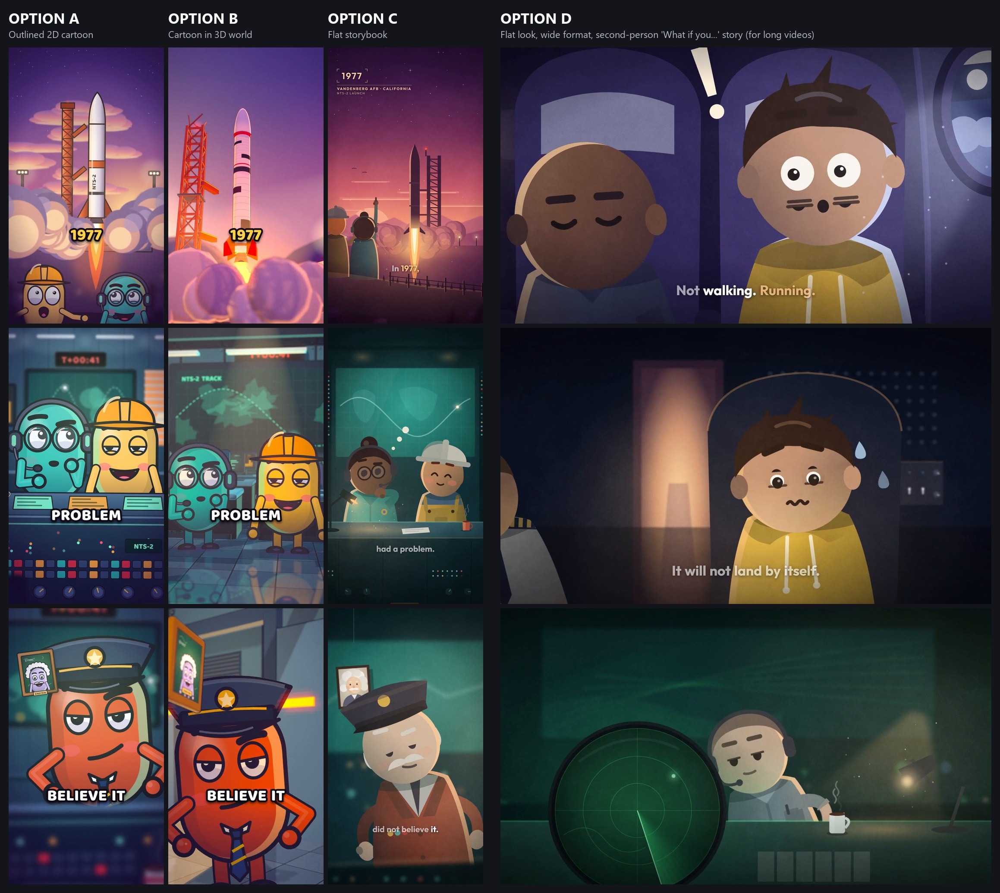
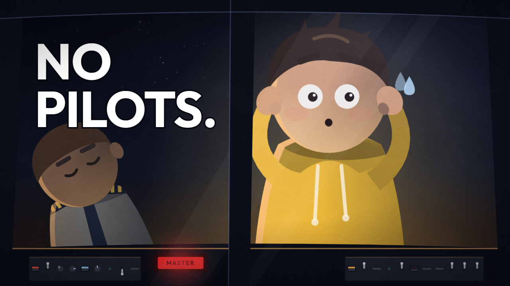
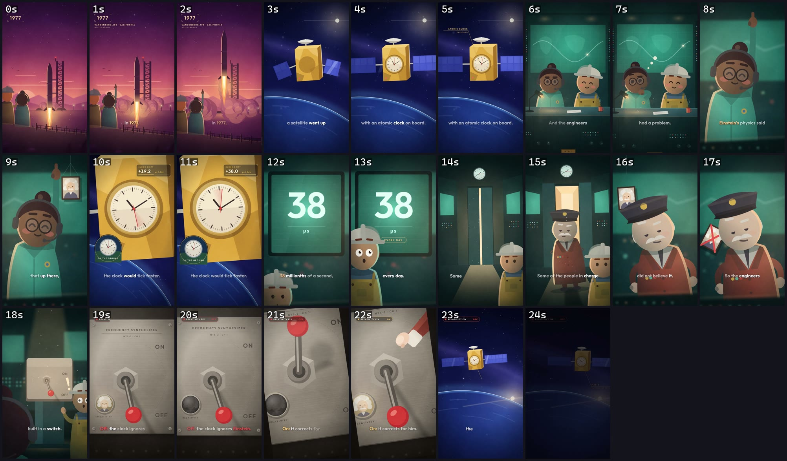

Four animation style options
Style tests for an animated explainer channel aimed at US and UK viewers. Everything is drawn in code. Options A, B and C tell the same 1977 satellite story with the same narration, so only the picture differs. Option D is a different story in the wide format used for long videos.
All four at a glance
Columns A, B and C show the same three moments. Column D shows three frames of its own story.

The videos
Option A: outlined 2D cartoon
45 seconds, vertical. Bold outlines, big reaction faces, one or two caption words at a time.
Option B: cartoon in a 3D world
25 seconds, vertical. The same characters in three-dimensional sets with a moving camera.
Option C: flat storybook
25 seconds, vertical. No outlines, few colours per scene, mood from light, calm camera, sentence captions.
Option D: "What If You Had to Land the Plane?"
66 seconds, wide 16:9. The flat look of option C with a second-person story, intended for 8 to 15 minute videos.
Option D thumbnail

Frame sheets: one frame per second
Option A

Option B

Option C

Option D